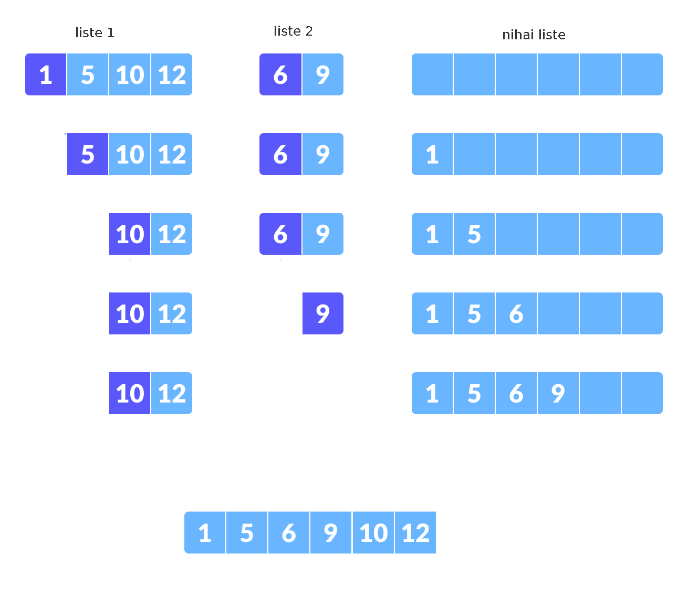
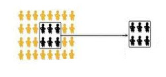

Paralel Veri Analizi, İstatistik
Eşzamanlı olarak veri işleme, analizi tekniklerinin temel yaklaşımını [2]'de gördük, orada ve bu yazıda kullanacağımız ana yapı şöyle; İşlenecek çok büyük bir CSV dosyası var, her çekirdek (birden fazla ise) her makina veri dosyasına direk erişebilir, paralel işlemler bu dosyanın farklı kısımlarını aynı anda işleyebilmek üzerinden gerçekleşecektir. Tercihimiz her zaman satır satır mesafe katedebilen algoritmalardır, yani verinin tek bir satırına bakarak bir bir katmadeğer elde edebilen, sonuca daha yaklaşabilen algoritmalar.
Sıralama (Sorting)
Yöntem 1
B tane kutu yaratırız, ve hangi kolon bazında sıralama yapıyorsak, mesela bir kimlik (id) diyelim, o kimliklerin büyüklük olarak 1,2,3, kutusuna düşmesini sağlarız. Eğer maksimum 1000 kimliği var ise, ve N=4 için, kimliklerden 0 ile 250 arası 1'inci kutuya, 251 ile 500 arası 2'inci kutuya vb gibi gitmeli.
İlk tarama örnek 4 paralel süreç, 4 kutu üzerinden 16 tane dosya yaratır. Yani her süreç tüm kutulara düşen verileri bulmak zorundadır.
Ardından paralel olarak yine her kutu için, o kutuya ait olan tüm parçaları alırız, hafızada birleştiriz, hafızada sıralarız, ve o kutu için diske yazarız.
Bu bitince sıralanmış tüm kutuların dosyalarını alt alta ekleriz / yapıştırırız (basit Unix
catile), ve sıralanmış nihai dosya elde edilir. Bu işler çünkü kutuları kendi aralarında 1,2,3,.. diye sıralıyoruz, biliyoruz ki 1'inci kutu içindeki id 2'inci kutudakilerden muhakkak daha küçük. Eh her kutu içindeki öğelerde sıralı olduğuna göre yapıştırılmış nihai sonuç ta kendiliğinden sıralanmış halde olacaktır.
Disk bazlı işlemleri göstermek için sentetik veri üretelim, sadece bir kimlik (id) kolonu, iki tane isim, adres için metinsel iki kolon.
import util
util.create_sort_synthetic(1000000)
! head -5 /tmp/input.csv
83473,nnnnnnnnnnnnnnnnnnnn,nnnnnnnnnnnnnnnnnnnn
46657,nnnnnnnnnnnnnnnnnnnn,nnnnnnnnnnnnnnnnnnnn
98157,HHHHHHHHHHHHHHHHHHHH,HHHHHHHHHHHHHHHHHHHH
111152,CCCCCCCCCCCCCCCCCCCC,CCCCCCCCCCCCCCCCCCCC
1 milyon satırlık bir veri oldu.
import pandas as pd
df = pd.read_csv("/tmp/input.csv",index_col=0)
print (df.index.min(), df.index.max(), np.mean(df.index))
0 474390 79792.60683260683
Alttaki kodda bu rakamlara bakarak bazı sınırları deneme/yanilma ile tanımladık, fakat profosyonel ortamda bu sınırları bulmak ta ayrı bir paralel süreç olabilirdi.
Şimdi ilk paralel kod, her kutuya düşen satırları paralel olarak bul, kendi dosyasına yaz.
import os, numpy as np, util
class BucketJob:
def __init__(self,B,ci):
self.B = B
self.ci = ci
self.bins = np.array([0, 50000, 80000, 130000, 474391])
print (self.B,self.ci)
self.fout = open("/tmp/B-%d-%d.csv" % (self.B,self.ci), "w")
def bucket(self, id): # id hangi kutuya ait?
return np.argmax(self.bins > id)-1
def exec(self,line):
toks = line.strip().split(',')
if self.bucket(float(toks[0])) == self.B:
self.fout.write(line)
def post(self):
# diske yaz
self.fout.close()
# altta seri islem var ama her kutu icin 4 paralel surec baslatilabilir
for B in range(4):
util.process(file_name='/tmp/input.csv', N=4, hookobj = BucketJob(B,0))
util.process(file_name='/tmp/input.csv', N=4, hookobj = BucketJob(B,1))
util.process(file_name='/tmp/input.csv', N=4, hookobj = BucketJob(B,2))
util.process(file_name='/tmp/input.csv', N=4, hookobj = BucketJob(B,3))
Şimdi her kutu için parçaları hafızaya getir, Pandas üzerinden hafızada sırala,
import pandas as pd, glob
import os, numpy as np, util
# seri islem gosterdik yine fakat her kutu icin paralel bir islem yaratilabilir
for B in range(4):
dfs = [pd.read_csv('/tmp/B-%d-%d.csv' % (B,i),header=None) for i in range(4)]
df = pd.concat(dfs,axis=0)
df = df.sort_values(by=0)
df.to_csv("/tmp/B-%d-sorted.csv" % B, header=None,index=None)
Ve nihai olarak tum kutu parcalarini birlestir,
! cat /tmp/B-*-sorted.csv > /tmp/B-final.csv
Kutu parçalarını basit alt alta yapıştırma ile birleştirmek işliyor çünkü her kutu içindeki kimlikler belli bir kutuya gitmiş durumda, mesela id=1000 kimliği B=0 içinde, id=72000 kimliği ikinci kutu içinde, ve eğer her kutunun dosyası kendi içinde sıralanmış ise, yapıştırılmış yeni dosyanin kendiliğinden sıralanmış hale geleceği garantidir.
Tek pürüz şurada ortaya çıkabilir; her kutu için üstteki örnekte dört tane parçayı hafızaya getirdik, ve orada sıraladık. Ya bu sıralama için hafıza yeterli olmazsa?
Bu durumda az hafıza ile diskteki dosyaları satır satır birleştirmenin bir yolu alttadır.
Yöntem 2
Bu yöntem bize daha az hafıza ile daha büyük dosyaları tek makinada sıralama şansı veriyor. Paralellik hala olabilir, fakat son birleştirme aşaması her ne kadar disk yoğunluklu olsa da tek bir makinada yapılmalı.
2'inci yöntem ile dosyanın ufak parçalarını yine hafızada sıralarız, diske yazarız, sonra bir süreç o parçaları disk bazlı (satır satır) okuyarak birleştirir. Sıralanmış parçaların birleşmiş ve hala sıralı halde olmasını nasıl garantileriz? Alttaki algoritma ile;
Her iki parçanın başına git
Bir döngü içinde her ikisinin sıradaki en küçük parçasına bak (zaten sıralanmış dosyalar için bu en üstteki satır)
Bu iki öğe arasından en ufak olanını al, yeni listeye ekle, öğesi alınan dosyanın sonraki satırına geç, tekrarla
Listeler farklı boylarda olabilir, bir liste öncekinden önce biterse önemli değil, kalan listeyi olduğu gibi yeni listeye ekle.
Altta bu işlemleri gösteren bir örnek görüyoruz.

Listeden bir öğe alındığında o öğeyi "çıkartılmış" gibi gösterdik, fakat kodlama bağlamında yapılan bir indisin ilerletilmesinden ibaret.
Tarif edilen birleştirmenin işlediğini alttaki ufak kodda görebiliriz. İki tane rasgele veri içeren liste yarattık, onları önce hafızada sıraladık, sonra teker teker her birinden en ufak öğeyi alarak yeni listeyi oluşturduk, ve yeni liste otomatik olarak sıralanmış hale geldi.
import numpy as np, random, util
def chunkmerge():
N1 = 5; N2 = N1*2
# rasgele sayilarla iki liste uret
arr1 = [random.randint(0,100) for i in range(N1)]
arr2 = [random.randint(0,100) for i in range(N2)]
arr1 = sorted(arr1) # parcayi hafizada sirala
arr2 = sorted(arr2) # parcayi hafizada sirala
print ('liste 1',arr1)
print ('liste 2',arr2)
res = [] # sonuclar
i=0; j=0 # her iki listenin farkli indisi var
while i<N1 and j<N2:
# her iki listenin islenmemis en kucuk degerine bak, arr1[i], arr2[j]
# kucuk olanini al
if arr1[i] < arr2[j]:
res.append(arr1[i])
i = i + 1
else:
res.append(arr2[j])
j = j + 1
# kalan ogeleri direk transfer et
while i<N1:
res.append(arr1[i])
i = i + 1
while j<N2:
res.append(arr2[j])
j = j + 1
print ('siralanmis liste',res)
# iki listeyi birlestirip klasik sekilde sirala
arrsorted = sorted(arr1 + arr2)
# ayni sonuc mu
print ('Siralama isledi mi?',arrsorted == res)
chunkmerge()
liste 1 [2, 33, 43, 49, 83]
liste 2 [5, 29, 32, 48, 52, 59, 60, 73, 81, 93]
siralanmis liste [2, 5, 29, 32, 33, 43, 48, 49, 52, 59, 60, 73, 81, 83, 93]
Siralama isledi mi? True
Disk bazlı kod üstteki mantığı dosya satırları için yapar, her iki
dosya açılır, satırlar bu dosyalardan teker teker alınır, döngü içinde
kimlikleri birbiri ile karşılaştırır, hangi dosyadan gelen kimlik daha
küçük ise onun satırı, o dönüşte, çıktıya yazılır, o dosya üzerinde
readline çağırılır böylece bir sonraki satıra geçilir. Dosyalardan
biri bitene kadar bu devam eder, sonra kalan dosyanın satırları direk
çıktıya yazılır.
Kod üzerinde görelim. Önce örnek veri yaratılır,
import util
util.create_two_sorted_synthetic(1000,1000)
Bu çağrı 1000 satırlık L1.csv ve L1.csv adında iki tane dosya
yarattı, bu dosyalar sıralanması yapılmış halde. Alttaki kod bu dosyaları
okuyarak birleştirecek,
def merge_sorted(file1,file2,outfile):
fout = open(outfile, "w")
f1 = open(file1, 'r'); f2 = open(file2, 'r')
s1 = int(os.path.getsize(file1)); s2 = int(os.path.getsize(file2))
print (s1,s2)
# her iki dosyadan ilk satirlari al
l1 = f1.readline(); toks1 = l1.strip().split(',')
l2 = f2.readline(); toks2 = l2.strip().split(',')
# her iki dosya icin arada bir yigit tabakasi kullanmak iyi
# olur, 'dosya bitisi' algilanmasi problemli, en iyisi yigit
# bitisine bakmak
stack1 = []; stack2 = []
stack1.append((l1,toks1)); stack2.append((l2,toks2))
# yigitlardan herhangi biri bitene kadar dongu
while len(stack1)>0 and len(stack2)>0:
# iki yigitin ilk ogelerine bak
l1,toks1 = stack1[-1]; l2,toks2 = stack2[-1]
# hangisi daha ufaksa onu yaz
if int(toks1[0]) < int(toks2[0]):
fout.write(l1)
stack1.pop()
if f1.tell() < s1:
l1 = f1.readline(); toks1 = l1.strip().split(',')
stack1.append((l1,toks1))
else:
fout.write(l2)
stack2.pop()
if f2.tell() < s2:
l2 = f2.readline(); toks2 = l2.strip().split(',')
stack2.append((l2,toks2))
# yigitlari bosalt
if len(stack1)>0:
l1,toks1 = stack1[-1]
fout.write(l1)
if len(stack2)>0:
l2,toks2 = stack2[-1]
fout.write(l2)
# bitmeyen dosyayi oldugu gibi ciktiya yaz
while f1.tell() < s1:
fout.write(f1.readline())
fout.flush()
while f2.tell() < s2:
fout.write(f2.readline())
fout.flush()
fout.close()
merge_sorted("/tmp/L1.csv","/tmp/L2.csv","/tmp/L-merged.csv")
Sonuç /tmp/L-merged.csv dosyasında bu dosya 2000 satırlık ve
sıralanmış halde olacaktır.
Dört tane sıralanmış parçayı nasıl sıralardık? 1 ile 2 birleştirilip A yaratılabilir, 3 ve 4 ile B. Sonra A ve B birleştirilir, C elde edilir.
Not: İlk yöntemde kutulama ile her kutu için dört dosya elde ediyoruz demiştik, ve üstteki algoritma ile her kutu için parçaları ikişer ikişer birleştirebiliyoruz. Acaba dört parçanın dosyasını aynı anda açıp her seferinde sıradaki dört değerden minimum olanı almak yine sıralanmış bir sonuç yaratır mı? Bu durumda dört dosya bir kerede satır satır okunarak birleştirilebilir. Bu da okuyucuya ödev olsun.
İstatistik
Bir dosyanın parçaları üzerinde ortalama ve varyans hesabını da paralel şekilde satırsal, parça parça yapabiliriz. Bu tür paralelliğin işleyebilmesi için önce satırsal, artımsal şekilde ortalama, ve varyans hesaplayabilen bir matematik lazım. O matematiği [7]'de işledik. Oradaki örnekte çok ufak veri gösterildi, alttaki örnekte dosya bazlı, daha büyük verileri işleyebilmeyi göreceğiz.

Örnek veri yaratalım, insanların boyunu kaydettiğimizi farzediyoruz, veri 150 cm ve 190 cm arası rasgele sayılardan seçildi, ortalamanın da o aralığa düşmesini bekleriz.
import random, pandas as pd
N = 10000
height = [int(random.uniform(150,190)) for i in range(N)]
d = {"id": range(N), "height": height}
df = pd.DataFrame(d)
df.to_csv('/tmp/height.csv',index=None,header=None)
print ('ortalama', np.round(df.height.mean(),2))
print ('varyans', np.round(df.height.var(ddof=0),2))
ortalama 169.5
varyans 133.29
Verinin tamamı /tmp/height.csv içinde, şimdi bu veriyi parçalara
ayırıp her grup için ortalama ve varyansı artımsal
hesaplattıracağız. Yine [2] altyapısını kullanarak,
import os, numpy as np, util, json
class StatJob:
def __init__(self,ci):
self.n = 0
self.ci = ci
self.ai = 0 # grup ortalamasi
self.vi = 0 # grup varyansi
def exec(self,line):
toks = line.strip().split(',')
xn = float(toks[1])
aiprev = self.ai
self.ai = self.ai + (xn - self.ai) / (self.n+1)
self.vi = self.vi + (xn - self.ai)*(xn-aiprev)
self.n = self.n + 1
def post(self):
# diske yaz
res = {"N": self.n, "ai": self.ai, "vi": self.vi / self.n}
fout = open("/tmp/height-%d.txt" % self.ci, "w")
fout.write(json.dumps(res, indent=4))
fout.close()
util.process(file_name='/tmp/height.csv', N=2, hookobj = StatJob(0))
util.process(file_name='/tmp/height.csv', N=2, hookobj = StatJob(1))
Bu noktada iki tane dosya üretilmiş olmalı,
! ls /tmp/height-*
/tmp/height-0.txt
/tmp/height-1.txt
Sonuç dosyaları içinde parçalar hakkında gerekli veriler var,
h1 = json.loads(open("/tmp/height-0.txt").read())
h2 = json.loads(open("/tmp/height-1.txt").read())
print (h1)
print (h2)
{'N': 5062, 'ai': 169.48143026471752, 'vi': 132.43021620799738}
{'N': 4938, 'ai': 169.52632644795497, 'vi': 134.17721295297002}
Şimdi bu parçaları birleştirmeye, ve nihai bir ortalama ve varyans oluşturmaya gelelim.
Birleştirme için de ayrı bir matematik gerekiyor, [6] yazısında o konuyu işledik,
n1,n2 = h1['N'], h2['N']
m1,m2 = h1['ai'], h2['ai']
v1,v2 = h1['vi'], h2['vi']
ap = (n1*m1 + n2*m2) / (n1+n2)
mean_of_var = (n1*v1 + n2*v2) / (n1+n2)
var_of_means = (n1*(m1-ap)**2 + n2*(m2-ap)**2 ) / (n1+n2)
df = pd.read_csv("/tmp/height.csv",header=None,names=['id','height'])
print ('grup 1',df.head(n1).height.mean(), df.head(n1).height.var(ddof=0))
print ('grup 2',df.tail(n2).height.mean(), df.tail(n2).height.var(ddof=0))
print ('ortalama',ap)
print ('varyans', mean_of_var + var_of_means)
grup 1 169.48143026471752 132.43021620799752
grup 2 169.52632644795463 134.17721295297002
ortalama 169.50360000000018
varyans 133.29338703999994
Birleştirilmiş değerlerin ilk başta bulunan toplam ortalama ve varyans ile aynı olduğunu görüyoruz.
Kümeleme (KMeans)
K-Means algoritma detayları [7]'de. Daha önce [1] yazısında bu işi eşle/indirge, Hadoop ortamında nasıl yapacağımızı gördük. Eğer [2]'deki yöntemi kullanmak istiyorsak, yani altyapı bir veriyi herhangi bir kritere göre (çoğunlukla basit bloklar üzerinden) bölmek ve her bölüm üzerinde ayrı bir süreç işletmek istiyorsak (indirgeme mimarisi kullanmadan), paralel KMeans algoritması şöyle kodlanabilir. [2]'de bahsettiğimiz gibi takip ettiğimiz yaklaşım hiçbir şey paylaşma (share nothing) yaklaşımı. Süreç işe başladığında kendi veri parçasını bilir, ve diğer süreçlerle iletişimde bulunmaz.
Fakat unutmayalım, KMeans özyineli (recursive) bir algoritmadir, verinin üzerinden tek bir geçiş (single pass) yeterli değildir. Veri birkaç kere baştan sonra taranmalıdır.
Bir algoritma şöyle olabilir;
Her geçişte, döngüde, verinin başına gidilir, ve küme merkezlerinin en son ne olduğu
centers.txtdosyasından tüm süreçler tarafından okunur (başta rasgele olabilir). Bu çok ufak bir veridir, anında okunabilir.Her süreç elindeki verinin her noktasının hangi merkeze yakın olduğunu saptar. Bu sonuçlar yeni bir dosyaya yazılabilir, bu dosya her süreç tarafından okunabilmelidir).
Ardından başa dönülür, biraz önce yapılan üyelik atamasına göre yeni küme merkezleri hesaplanır. Bu yeni merkezler
C-0-0,C-0-1gibi bir dosyaya yazılır, kiC-0-10'inci kümenin 1'inci süreç tarafından hesaplanmış merkezidir.Bu merkezler tabii ki tamamlanmış değildir, bir süreçten gelen hesaplardır bunlar, ana takip edici script tüm süreçlerin o geçişteki işi bitince, her küme için yarım hesaplanmış merkezleri alır, ortalamasını hesaplayıp yeni
centers.txtdosyasını oluşturur.Üstteki adımlar tekrarlanır, ta ki belli bir geçiş sayısı ya da "stabiliteye erişim" durumu oluncaya kadar, stabilite derken mesela eğer küme merkezlerinde her geçiş sonrası artık büyük değişimler olmuyor ise, iş bitmiş kabul edilebilir.

Önemli noktaları vurgulayalım, veri satırsal şekilde paylaştırılır, her sürecin işlediği parçada her kümeden değer olabilir. Her geçişte işlem paralel olur, fakat bir takip edici script o geçiş bitince bir sonraki geçişi hazırlamakla sorumludur, her süreçten gelen merkezlerin ortalaması, bir sonraki geçişin başlatılması bir script'in sorumluluğundadır. Ortalama, bekleme, birleştirme işlemleri ağır işlemler değildir, bu sebeple seri işlemelerinde problem yoktur.
Kaynaklar
[1] [Paralel KMeans, Hadoop](../../2013/10/paralel-kmeans-hadoop.html)
[2] Bayramlı, Paralel, Satır Bazlı Dosya İşlemek
[3] Wikipedia, External Sorting
[4] https://en.wikipedia.org/wiki/K-waymergealgorithm
[5] [Stackoverflow](https://stackoverflow.com/questions/29494594/sorting-data-with-space-contrainsts)
[7] [Azar Azar İstatistik (Incremental Statistics) Temeli](https://burakbayramli.github.io/dersblog/stat/stat176app1inc/azarazaristatistik_incrementalstatistics_.html)
[6] [Grupların Ortalamalarını ve Varyanslarını Birleştirmek](https://burakbayramli.github.io/dersblog/stat/stat010covcorr/beklentivaryanskovaryansve_korelasyon.html#group)
[7] [K-Means Kümeleme Metodu](https://burakbayramli.github.io/dersblog/algs/algs080kmeans/kmeanskumelememetodu.html)
Yukarı